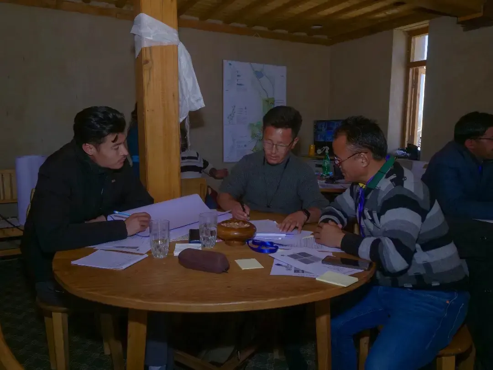

HELM Residency
HIAL Experiential Leadership Module
A Homecoming Residency for the Builders of Ladakh's Future
"The next Chief Minister of Ladakh may be sitting in Bengaluru today. The future Vice Chancellor of a Himalayan university may be working in Gurgaon. The architect who will redesign mountain settlements may be in Delhi. The entrepreneur who will transform Ladakh's economy may be in Mumbai. The scientist who will solve our water crisis may be in California. The educator who will reimagine learning for the Himalayas may be in London.
The question is not whether Ladakh has talent. The question is whether that talent will come home."
ABOUT HELM RESIDENCY:
For generations, Ladakh has sent its sons and daughters into the
world. They left these mountains carrying dreams larger than the
valleys they grew up in. They studied in prestigious institutions,
built careers in corporations, universities, government systems,
laboratories and entrepreneurial ventures. They acquired skills,
knowledge, networks and experiences that previous generations
could scarcely have imagined.
Today, Ladakhis are contributing to economies, institutions and
societies across India and the world. Yet history occasionally
presents a moment that asks something more of us. Ladakh stands
at such a moment. As our region moves towards a future of greater
self-governance, stronger institutions, and the possibility of a
legislature that can shape its own destiny, we have an important
civilizational question facing us:
Who will build the institutions of the future in Ladakh?
Who will lead our universities? Who will create our research
centres? Who will design climate-resilient settlements? Who will
shape a regenerative tourism economy? Who will build renewable
energy systems for our villages? Who will ensure that development
does not come at the cost of our culture, ecology and identity?
Who will carry Ladakh forward without losing its soul?
No government can answer these questions alone. No policy can
substitute for leadership. No investment can replace human
commitment. The mountains that raised us are calling once again.
Not because they need saving. But because they need stewardship.
Not because Ladakh lacks talent. But because Ladakh needs its
talent to return.
The HELM Residency is an invitation to that homecoming.
It is a call to accomplished Ladakhis, within and outside Ladakh,
who have spent years building expertise in the world and are now
ready to participate in something larger than themselves. A
movement to build institutions. A movement to shape the future. A
movement to prepare the next generation of leaders for Ladakh.
Key details of the Residency:
- Duration: 6 months, fully residential leadership residency
- Eligibility: Ladakhis (within or outside Ladakh) with 5+ years of post-graduate professional experience
- Location: HIAL Phyang, Leh-UT Ladakh
- Fee: No tuition fee — contribution-based model through a self-directed Big Idea Project
- Boarding: ₹15,000/month contribution + refundable ₹30,000 security deposit
WHY HELM?
The Himalayan Institute of Alternatives, Ladakh (HIAL) was founded on a simple but revolutionary question:
Can education become a force for solving the real challenges of society?
Over the past decade, HIAL has emerged as one of the world's most innovative educational experiments — recognised internationally and showcased at prestigious global platforms including the Victoria & Albert Museum (V&A), London. What began as a dream has become a globally recognised movement. But what comes next will require leaders — not administrators, not managers, not careerists — but institution-builders.
WHO SHOULD APPLY:
- Experienced professionals, entrepreneurs, researchers, educators, civil servants, technologists, architects, development practitioners and changemakers
- At least 5 years of expertise built post graduation/ post-graduation
- Ready to channel knowledge, experience and leadership towards the future of Ladakh
- Open to pursuing leadership pathways within HIAL, government, public policy, civil society, technology, education, tourism, sustainability or the private sector — or building their own ventures

PROGRAMME STRUCTURE & COURSEWORK:
The HELM Residency is designed as a transformational leadership journey that combines domain expertise, personal growth, experiential learning and real-world impact. Leaders-in-Residence will engage with some of the most pressing challenges and opportunities facing Ladakh and mountain regions globally.
1. LEADERSHIP MASTERCLASSES:
Intensive sessions with distinguished practitioners, entrepreneurs, institution-builders, academics, and innovators from India and across the world — covering leadership and institution building, entrepreneurship and innovation, systems thinking and complexity, social impact and change-making, negotiation and conflict resolution, technology and the future of society, and ethical and conscious leadership.
2. LIFE SKILLS, INNER DEVELOPMENT & SELF-MASTERY:
Great leadership begins with self-mastery. This strand emphasises personal growth and inner development through guided sessions on self-awareness and reflective practice, emotional intelligence, written & oral communication, team building and collaboration, decision-making under uncertainty, well-being and resilience, purpose and life design, mindfulness and contemplative practices, and leadership from values and integrity.
3. ELECTIVE STREAMS:
Each fellow chooses one primary elective aligned with their interests, expertise, and intended area of contribution.
4. CAPSTONE IMPACT PROJECT:
At the heart of HELM lies a Big Idea Project. Each fellow will conceptualise, design, and execute a self-directed project addressing a real challenge or opportunity in Ladakh or other mountain regions, under mentorship from experienced practitioners, domain experts, policymakers, entrepreneurs, and global thought leaders relevant to their project area. The objective is not merely to study leadership but to practice it through meaningful action.BRIEF INTRODUCTION OF THE ELECTIVE STREAMS:
1. ECO-RESPONSIVE ARCHITECTURE:
High-altitude architecture and sustainable design, traditional and contemporary building systems, climate-responsive construction, circular economy in the built environment, and regenerative habitat design.
2. ECOLOGY & ENVIRONMENTAL STEWARDSHIP:
Mountain ecology and biodiversity, water security and glacier systems, climate adaptation and resilience, regenerative agriculture and landscape restoration, and ecological economics and sustainability.
3. ENERGY STUDIES:
Renewable energy systems, solar and micro-grid technologies, energy access in remote regions, sustainable infrastructure, and future energy transitions for mountain communities.
4. TOURISM & MOUNTAIN ECONOMIES:
Sustainable and regenerative tourism, cultural heritage preservation, experience design and hospitality, community-led tourism models, and tourism entrepreneurship and destination management.
5. EDUCATION & HUMAN DEVELOPMENT:
Future-ready education systems, experiential and project-based learning, leadership in educational institutions, and alternative education models.LEARNING OUTCOMES:
By the end of the residency, participants will:
- Develop deep contextual understanding of Ladakh's opportunities and challenges
- Gain practical leadership and institution-building capabilities and build expertise within a chosen domain of impact
- Strengthen personal effectiveness, resilience, and self-awareness
- Develop a network of mentors, peers, and collaborators
- Complete a tangible project that creates lasting value for Ladakh and mountain communities
- Be prepared to assume leadership roles within HIAL, public institutions, social enterprises, government initiatives, and emerging development ecosystems across the Himalayan region
RESIDENTIAL REQUIREMENT, FEES AND BOARDING POLICY:
- HELM is a fully residential leadership residency. All Leaders-in-Residence are required to reside on the HIAL campus for the duration of the programme, as the learning experience extends well beyond the classroom into community living, shared reflection, collaborative work, and immersion in the culture and mission of HIAL.
- All Leaders-in-Residence shall abide by the HIAL Resident Policy, including its code of conduct, community norms, and guidelines governing campus life.
- No professional or tuition fee is charged for the HELM programme. The true fee for the Residency is paid through sweat, intellectual and creativity capital, as Leaders-in-Residence devote their time, skills, and expertise to a self-directed Big Idea Project addressing real challenges and opportunities within HIAL, Ladakh, or the wider Himalayan region.
- Leaders-in-Residence are required to contribute ₹15,000 per month towards boarding and lodging. A refundable security deposit of ₹30,000 will also be collected, adjusted against any no-dues at the end of the residency.
- The residency includes a scheduled winter break, during which Leaders-in-Residence will be required to vacate their residential accommodation on campus, returning when the programme resumes as per timelines communicated by the Institute.
INTELLECTUAL PROPERTY AND BIG IDEA PROJECTS:
A distinctive feature of the HELM Residency is the opportunity for Leaders-in-Residence to work on real-world challenges and strategic initiatives that are integral to HIAL's mission and long-term vision for Ladakh and the Himalayan region. These Big Idea Projects are conceived within the institutional ecosystem of HIAL and are often based on ongoing research, programmes, technologies, or initiatives developed or commissioned by the Institute. Accordingly, unless otherwise agreed in writing, all intellectual property — including concepts, designs, research outputs, methodologies, reports, prototypes, software, documentation, and other work products developed as part of a Big Idea Project during the residency — shall vest exclusively in HIAL.
At the same time, HIAL recognises and encourages innovation and entrepreneurship among its Leaders-in-Residence. Where a Fellow wishes to further develop, commercialise, or independently pursue a project or component thereof after the completion of the residency, the Institute remains open to mutually beneficial arrangements through separate Memoranda of Understanding, licensing arrangements, assignments, joint venture agreements, or other appropriate legal instruments — on terms that are fair and equitable to all concerned.